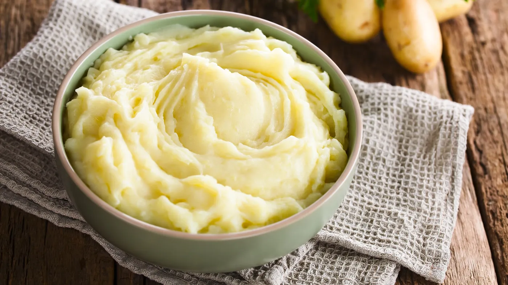

Purée

Liste d'ingrédients
- Pommes de terre (variété de votre choix)
- Beurre
- Lait
- Sel et poivre, au goût
Description de la recette
- Épluchez les pommes de terre et coupez-les en morceaux de taille uniforme.
- Placez les pommes de terre dans une casserole d'eau froide salée.
- Portez l'eau à ébullition et faites cuire les pommes de terre pendant environ 15-20 minutes, ou jusqu'à ce qu'elles soient tendres et qu'un couteau puisse les traverser facilement.
- Égouttez les pommes de terre cuites.
- Dans une petite casserole, faites chauffer le lait et le beurre jusqu'à ce que le beurre soit complètement fondu.
- Écrasez les pommes de terre cuites à l'aide d'un presse-purée ou d'une fourchette.
- Incorporez lentement le mélange de lait et de beurre dans les pommes de terre écrasées jusqu'à obtenir la consistance désirée.
- Assaisonnez la purée avec du sel et du poivre selon votre goût. Mélangez bien.
- La purée de pommes de terre est prête à être servie. Garnissez-la éventuellement de quelques morceaux de beurre fondu ou d'herbes fraîches.